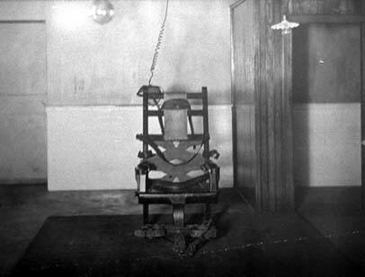

The condemned person is wired into a high voltage circuit. Electrodes are strapped to the head and ankles. The rest of the apparatus i.e. the chair, the straps the hood are there to restrain the victim until the execution is complete. The electric chair is more often made out of oak and copper fittings. Some states have used the gallows from which prisoners used to be hung. In many states the prisoners themselves have built the chair in the workshops.
Individual states decide themselves the voltage and the length of time the current is kept flowing. The lower the voltage the longer the execution take but if the voltage is too high the body just burns. Nowadays it is about 2200 volts at seven to twelve amps. Because the human body isn’t a good conductor of electricity a wet sponge is placed on the top of the condemned’s head. There needs to be a conductor between the strap to the head and to the ankle and the wet sponge carry’s the current quicker and the execution is over in a matter of minutes. Without the sponge, the resistance would be so high the condemned would be cooked rather than shocked to death.
Nobody is very sure how the chair exactly
kills. The theory is that the initial bolt of electricity stops the heart
and the brain and the condemned dies of shock. But still there is no scientific
evidence.
But like most electrical appliances the chair doesn’t always run smoothly. In July 1999, Allen Lee Davis was executed in Florida. He was hit with 2300 volts and blood started to pour from his mouth. The electrocution continued and by the time he was pronounced dead the stain that had fallen from his mouth was the size of a dinner plate on his shirt and had seeped through the straps. He was the first on the Florida’s new electric chair.
In March 1997, also in Florida, during the execution of Pedro Medina blue and orange flames sparked from the mask covering his face. Flames up to a foot long shot out from the right side of his head for up to 10 seconds. The execution chamber clouded with smoke, and the smell filled the witness room.
July 14 1989, Alabama. Horace F. Dunkins who was mentally retarded took 19 minutes to be executed. Due to human error – faulty cable hookups, there wasn’t enough current to cause death.
It is also unknown if the victims feel
pain. A few who have survived the chair say that the pain is unbearable.
Others say when the chair operates properly the victim’s nerves are immediately
paralysed stopping all sensation of pain.
The late U.S Supreme Court Justice, William Brennan, Jr., described electrocutions:
‘….death by electrical current is extremely violent and inflicts pain and indignities far beyond the “mere extinguishment of life”. Witnesses routinely report that, when the switch is thrown, the condemned prisoner “cringes”, “leaps”, and “fights the straps with amazing strength.” ”The hands turn red, then white, and the cords of the neck stand out like steel bands”. The prisoner’s limbs, fingers, toes, and face are severely contorted. The force of the electrical current is so powerful that the prisoner’s eyeballs sometimes pop out and rest on his cheeks”. The prisoner often defecates, urinates, and vomits blood and drool.’
Capital punishment is an issue that has
divided people more than likely since time began and nobody can really
see an end to this dividing issue. Today’s world is far from crimefree.
Every day we see horror stories of pedophiles abducting and killing children,
real-life cannibals, serial rapists and mass murderers. Nobody can start
to imagine the feelings of grief and hatred the victims’ families feel.
They have every right to demand that the guilty lose their life. But we
can never always be 100% sure that the right person is being executed.
There will never be a certainty that all those who sit in the chair is
the right person sitting there. It is far too easy to have somebody executed
for a crime they did not commit. Police corruption, financial circumstances,
ignorance, public desire to punish somebody and racial bigotry all contributes
to the increasing potential of receiving an unfair trial. However, maybe
if it was somebody very special to me that was the victim I would feel
very different, but I also believe now that I would not be in a very objective
state of mind.
William Brennan also questioned whether electrocutions were:
‘Nothing less than the contemporary
technological equivalent of burning people at the stake.’

Other websites
relating to the electric chair: